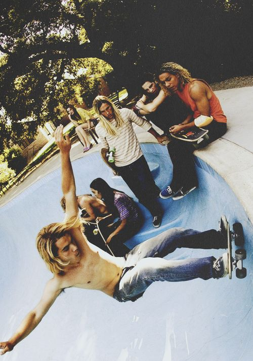
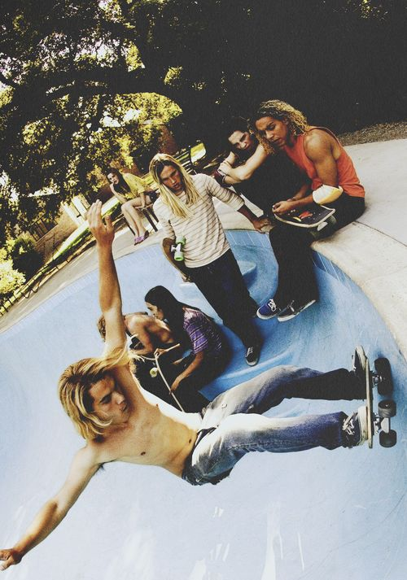

history
"A primeira manobra foi apenas permanecer em pé e permanecer no tabuleiro descendo", lembra Jim Fitzpatrick, pioneiro do skate. "Quanto mais você avançava e mais rápido chegava lá - esse era o ponto culminante de governar o mundo! E isso era muito parecido com o surf. Em 1957, o objetivo não era destruir a onda ou destruí-la; a meta era a conquista. de passar por seções e fazer a onda. Fazer a onda era como andar de skate em declive. " Mas, embora a mentalidade de surfistas e skatistas fosse muito semelhante, suas origens de design não poderiam ter sido mais diferentes. Havaianos pré-modernos selecionam cuidadosamente o koa ou wiliwili certoárvore. Eles o derrubaram e colocaram um peixe capturado recentemente dentro da cavidade da raiz como uma oferenda aos deuses. A prancha tinha o formato de um machado e um pedaço de coral portátil, depois alisada com pedras. No final dos anos cinquenta, as crianças do sul da Califórnia arrancaram as botas dos patins, cortaram os pratos restantes ao meio e trancaram as rodas e os caminhões em pranchas de madeira. "Era impossível", lembra Fitzpatrick. "Nas rodas de aço, qualquer pedrinha, qualquer galho, uma folha até o faria parar de triturar." O grande avanço ocorreu em 1959, quando as rodas de argila foram introduzidas. "Foi como a Idade da Pedra indo para ferramentas de metal. Foi exatamente essa coisa mágica que tornou o skate mais fácil e mais aventureiro. Abriu um novo mundo. Quanto mais fundo eu mergulho na conexão surf / skate, mais concluo que é realmente uma história de design. As pranchas evoluem e, assim, abrem novos pontos e novas manobras. Ondas de laje como Teahupoo, The Box e Bluff de Shipstern não poderiam ter sido surfadas no início dos anos 60 simplesmente porque as pranchas não se encaixavam. Corrimãos e saliências eram ignorados por skatistas imaginativos, porque não havia caudas e narizes e, portanto, não ollies.photography
surf vs skate 

california influence
"California is always a good ideia"
videos
Color Codes
Information about color tags

Table Tags
| Heading | ||
|---|---|---|
| Column1 | Column2 | Column3 |
| CellSpanningin 3 Rows(2nd and 3rd Cellmerged) | CellSpanningin 2 Rows(1st and 2nd Cellmerged) | 1st Cell |
| 2nd Cell | ||
| 3rd Cell | ||
| 3rd Cell | 4th Cell |